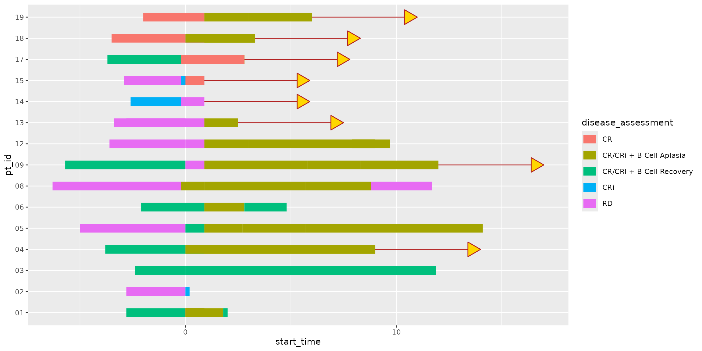

It can be useful to visually indicate the continuation of specific records in a swimmer plot. Optionally adding arrows to the tail ends of swimmer plot lanes in ggswim can help communicate subject survival status, such as whether or not a subject is still on a given study.
To facilitate the addition of arrows, we provide the
geom_swim_arrow() function as a way to tack on these
continuation indicators to your swimmer plot lanes. Behind the scenes,
the inclusion of arrows is facilitated by a call to
ggplot2::geom_segment(), setting 0 length segments so that
assigned arrows are always placed on the right side of indicated lanes.
geom_swim_arrow() gives users full control over arrow neck
and head length, along with options for color, fill, and type (refer to
?geom_swim_arrow for detailed information).
Adding arrows using geom_swim_arrow()
To demonstrate how you might add arrows onto the
patient_data dataset, let’s take a subset of
patient_data that would help us make use of
geom_swim_arrow():
library(ggswim)
library(ggplot2)
arrow_data <- patient_data |>
dplyr::left_join(
end_study_events |>
dplyr::select(pt_id, label),
by = "pt_id"
) |>
dplyr::select(pt_id, end_time, label) |>
dplyr::filter(.by = pt_id, end_time == max(end_time)) |>
dplyr::filter(is.na(label)) |>
unique()
arrow_data |>
rmarkdown::paged_table()This should look familiar as a pared-down subset of
end_study_events without an indicated label.
Since filled out label statuses from end_study_events
dataset mean a subject went off study, arrows are only applicable for
subjects with no end study status. Now let’s use
geom_swim_arrow() in combination with
geom_swim_lane() to make a swimmer plot:
patient_data |>
ggplot() +
geom_swim_lane(
mapping = aes(
x = start_time, xend = end_time, y = pt_id,
color = disease_assessment
),
linewidth = 5
) +
geom_swim_arrow(
data = arrow_data,
mapping = aes(xend = end_time, y = pt_id),
arrow_neck_length = 5,
arrow_colour = "slateblue",
arrow_fill = "cyan"
)